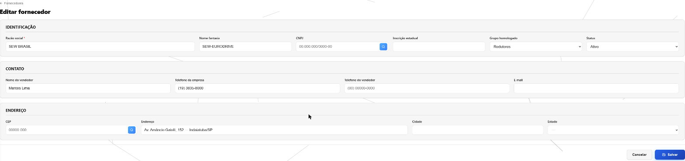
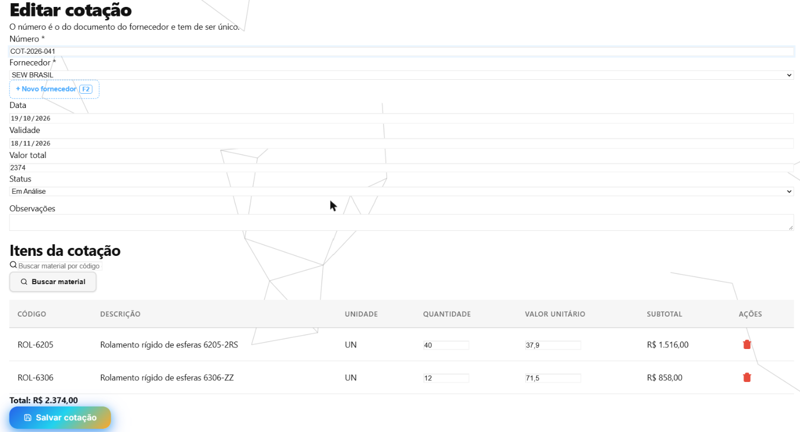
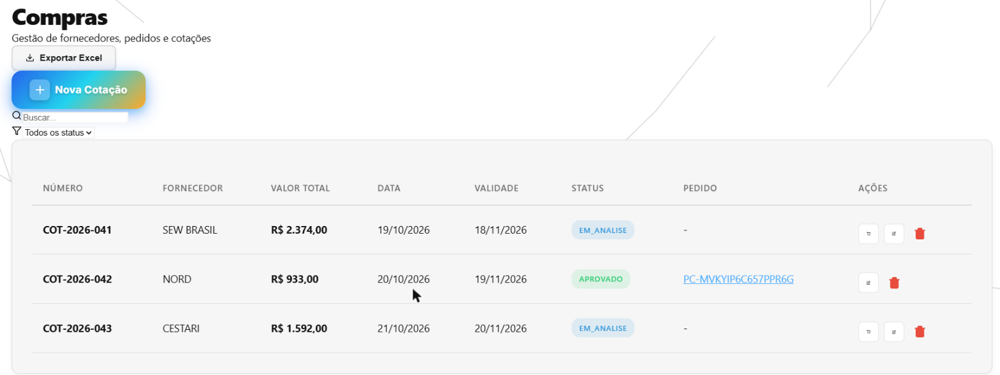
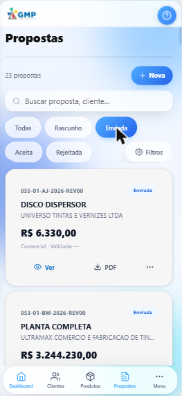
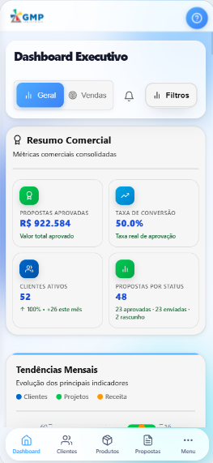

O que foi feito no sistema nesta semana
Semana de 20/09 a 26/09/2026 · CRM GMP Industriais
O sistema no celular ganhou cara de aplicativo de verdade: Propostas, Dashboard e as listas de todos os módulos foram refeitas para a tela pequena. Em Compras, fornecedores e cotações passaram a ser cadastrados pela própria tela, e a cotação aprovada vira pedido de compra com um clique, sem redigitar nada. Por baixo, sumiu o aviso que travava o aplicativo ao abrir e foram fechadas portas que deixavam a mesma cotação virar dois pedidos. Foram cerca de 14 horas de trabalho, a maior parte no celular.
O que você já pode ver na tela
Fornecedores cadastrados e editados pela própria tela
Onde: Compras → Fornecedores → “Novo Fornecedor” ou o lápis de cada linha.
Antes: o botão “Novo Fornecedor” e o lápis não abriam nada — o comprador clicava e voltava para a lista. Só dava para cadastrar fornecedor por uma janela escondida dentro de “Fornecedores homologados”. E não havia como marcar um fornecedor como inativo: o filtro “Inativo” existia, mas nunca achava ninguém.
Agora: os dois botões abrem a ficha do fornecedor, com identificação, contato, endereço e grupo. Na edição aparece o campo Status, com Ativo e Inativo. O fornecedor inativo continua na lista com o selo “inativo”, mas deixa de ser oferecido no recebimento de material do Almoxarifado e na hora de vincular a um grupo.

Cotação com os itens cotados e o total somado sozinho
Onde: Compras → Cotações → “Nova Cotação”.
Antes: não havia como cadastrar uma cotação — o botão “Novo Cotação” (assim mesmo, com o gênero errado) voltava para a lista. E, mesmo que houvesse, o que foi cotado (qual material, quanto, a que preço) ficava só no PDF do fornecedor.
Agora: o botão “Nova Cotação” abre o formulário: número do documento do fornecedor, fornecedor, data, validade e status. No bloco “Itens da cotação”, busca-se o material pelo código ou pela descrição e ele entra numa tabela com quantidade, valor unitário e subtotal. Com itens, o “Valor total” é somado sozinho e fica travado. Sem itens, continua sendo digitado — a cotação “R$ 1.500 o lote” segue valendo. O número da cotação não se repete: a tela avisa “Já existe uma cotação com o número…”.

A cotação vira pedido de compra com um clique
Onde: Compras → Cotações, no ícone de carrinho (“Gerar pedido”) de cada linha.
Antes: aprovada a cotação, o comprador abria um pedido novo e redigitava tudo: fornecedor, cada material, quantidade e preço.
Agora: um clique no carrinho cria o pedido de compra já com o fornecedor, os itens e os preços da cotação, e abre a edição dele para conferir a previsão de entrega. A lista de cotações ganhou a coluna “Pedido”, com o número do pedido gerado (clicável). A cotação que já virou pedido abre travada, com o aviso “Esta cotação já gerou o pedido…”, para ninguém alterar depois o que já foi comprado. O Excel exportado também traz a coluna “Pedido”.

Propostas e o menu no celular, com cara de aplicativo
Onde: Comercial → Propostas, aberto no celular. O menu abre pelo botão “Menu” da barra de baixo.
Antes: a lista de propostas era uma tabela de sete colunas espremida, que precisava ser rolada de lado. O menu lateral abria escuro, com o topo cortado e os botões “Minha Conta” e “Sair” escondidos atrás da barra de baixo.
Agora: cada proposta é um cartão: número e título no alto, cliente logo abaixo, valor e situação em destaque, validade e data no rodapé. “Ver” e “Editar” ficam a um toque; “Assinar” e “Excluir” sobem numa folha de baixo, como em aplicativo. O menu lateral desliza inteiro, com o rodapé alcançável. O aplicativo ganhou um visual novo, translúcido, no azul da GMP — e ficou mais leve: as animações foram refeitas para não pesar no celular. A lista de Clientes passou a mostrar o logo do cliente no lugar das iniciais, quando o logo está cadastrado. No computador, nada mudou.

Dashboard refeito para o celular
Onde: Comercial → Dashboard, aberto no celular.
Antes: a primeira coisa na tela era uma faixa de logos de clientes. Os números vinham um por linha — só dois cabiam na tela —, e o valor de cada indicador estava num azul claro quase ilegível sobre o fundo branco. O título sumia da metade para a direita.
Agora: os indicadores aparecem em duas colunas, seis números já na primeira tela, em azul escuro e bem legível. A troca Geral/Vendas e o botão Filtros ficam numa linha só. A faixa de logos continua no computador.

Todas as listas legíveis no celular, em todos os módulos
Onde: qualquer lista aberta no celular — por exemplo, Almoxarifado → Materiais.
Antes: mais de 50 tabelas (Relatórios com 30 colunas, Financeiro com 27, Compras com 21) viravam rolagem de lado no telefone. Quando viravam cartão, todas as informações tinham o mesmo peso, e os botões eram uma fileira de oito ícones iguais, sem nome.
Agora: toda tabela vira, sozinha, um cartão organizado: foto e código no alto, situação no canto, nome em destaque, valor grande e o resto em letra menor. Os botões mostram o nome ao lado do ícone (“Extrato”, “Requisitar”, “Ver no mapa”…). Isso vale também para as telas que ainda forem criadas. As 126 telas do sistema foram percorridas no celular, no tema claro e no escuro, até não sobrar nada saindo da tela.

O que foi feito por baixo — e por que importa
Parte do trabalho não muda a aparência das telas: é o “motor” que faz as contas e guarda as informações, e os detalhes que só aparecem quando alguém usa de verdade. Esta semana:
O aplicativo não trava mais com um aviso ao abrir
O problema: ao abrir o sistema no celular, aparecia quase sempre uma janela dizendo que o sistema não estava no ar, cheia de instruções técnicas. Fechar e abrir de novo resolvia. Acontecia porque o celular ainda estava reconectando à internet quando o sistema fazia a primeira consulta.
O que foi feito: a janela saiu. Se a primeira consulta falha, o sistema tenta de novo sozinho, um segundo depois. Se falhar outra vez, a própria tela avisa, com uma mensagem para quem usa.
O que isso evita: a impressão de que o sistema caiu toda vez que alguém abre o aplicativo.
A mesma cotação não vira dois pedidos
O problema: um clique duplo no “Gerar pedido”, ou duas pessoas clicando ao mesmo tempo em abas diferentes, podia criar dois pedidos de compra da mesma cotação — é como dois compradores fechando a mesma compra sem saber um do outro. Também, apagar uma cotação com itens daria um erro genérico.
O que foi feito: só um pedido é criado; quem chega depois recebe o aviso “Cotação … já gerou o pedido …”, e o botão fica desativado enquanto o primeiro clique é processado. A cotação com itens é apagada inteira. A que já virou pedido não pode ser apagada; se o pedido for excluído, a cotação volta a ficar livre. Fornecedor inativo não vira pedido.
O que isso evita: material comprado em dobro e pedido sem cotação de origem.
Fornecedores: botões que diziam ter feito e não faziam
O problema: em Fornecedores homologados, o botão “Remover do grupo” respondia “Fornecedor removido do grupo” e o fornecedor continuava lá. Excluir um fornecedor que tinha cotação ou lista de preços dava só “Erro ao excluir item”, sem dizer por quê.
O que foi feito: “Remover do grupo” remove de verdade (o fornecedor continua cadastrado). A exclusão recusada diz o motivo: “Fornecedor possui cotações” ou “possui itens cadastrados”. O fornecedor inativo aparece no grupo com um selo, em vez de sumir.
O que isso evita: achar que o cadastro foi arrumado quando não foi.
Botões e letras que não apareciam direito, no sistema inteiro
O problema: botões só de ícone apareciam como um quadrado branco vazio, em qualquer tela — o ícone existia, mas era espremido até sumir. Em 12 telas, a lupa da busca ficava por cima do texto digitado. E em cinco módulos (Produção, Frota, Compras, Engenharia e Administração) selos e resultados estavam num azul claro difícil de ler — na Engenharia, o resultado do cálculo era a coisa menos legível da tela.
O que foi feito: os ícones voltaram a aparecer, a lupa saiu de cima do texto e as cores foram escurecidas até ficarem legíveis, no tema claro e no escuro.
O que isso evita: botão que ninguém acha e número lido errado.
Cadastros da Frota e da Produção que recusavam dado preenchido
O problema: ao gravar uma multa ou um documento de veículo, uma máquina, um roteiro ou um motivo de parada, o sistema respondia “campo obrigatório” com o campo preenchido. Esses cinco cadastros simplesmente não gravavam.
O que foi feito: os cinco voltaram a gravar. O defeito apareceu ao preencher as telas com dados de exemplo para conferir o celular.
O que isso evita: multa ou máquina controlada fora do sistema porque o sistema “não deixava”.
Para onde foi o tempo
Cerca de 14 horas de desenvolvimento nesta semana.
Tempo por atividade
| Atividade | Horas |
|---|---|
| O sistema no celular: visual, Propostas, Dashboard e revisão das 126 telas | 9 h |
| Fornecedores e cotações com tela própria | 3 h |
| Cotação com itens que vira pedido de compra | 2 h |
| Total | 14 h |
Quase dois terços do tempo foram direto nas telas que você usa, a maior parte no celular. Uma parte menor foi nas conferências automáticas: são robôs que repetem centenas de situações a cada mudança — o clique duplo no “Gerar pedido”, a cotação sem itens, a tabela que vira cartão só no celular e nunca no computador — para que o que já funciona não quebre escondido. O resto foi planejar cada mudança e atualizar os manuais.
As horas são estimadas pelo registro do trabalho salvo ao longo da semana. Pesquisa, conversas e testes feitos à mão não entram — o número real é maior.
Quer conferir?
- Abra Compras → Fornecedores, clique no lápis de um fornecedor, troque o Status para Inativo e salve. Use o filtro “Inativo” da lista para encontrá-lo.
- Abra Compras → Cotações → Nova Cotação, escolha o fornecedor, busque dois materiais em “Itens da cotação”, preencha quantidade e preço e veja o total se somar sozinho. Salve.
- Na lista de Cotações, clique no carrinho (“Gerar pedido”) da cotação salva. O pedido abre já preenchido; volte à lista e veja o número dele na coluna “Pedido”.
- No celular, abra Comercial → Propostas e toque no botão “Mais ações” de uma proposta para ver a folha com “Assinar” e “Excluir”.
- Ainda no celular, abra Comercial → Dashboard e Almoxarifado → Materiais e compare com o computador.